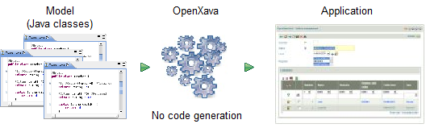
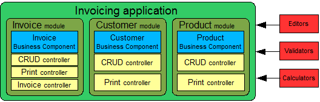
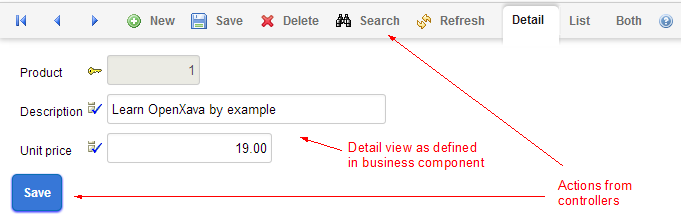

Table of Contents
Appendix A: Architecture & philosophy
OpenXava is a framework for rapid development of business applications using Java. It is easy to learn and one can have an application up in no time. At the same time, OpenXava is extensible, customizable and the application code is structured in a very pure object oriented way, allowing you to develop arbitrarily complex applications.The OpenXava approach for rapid development differs from those that use visual environments (like Visual Basic or Delphi) or scripting (like PHP). Instead, OpenXava uses a model-driven development approach, where the core of your application are Java classes that model your problem. This means you can stay productive while still maintaining a high level of encapsulation.
This lesson will show you the concepts behind OpenXava as well as an overview of its architecture.
The OpenXava concepts
Though OpenXava takes a very pragmatic approach to development, it is based on the refinement of two well known ideas: The very popular methodology of Model-Driven Development (MDD) and the concept of Business Component. Ideas from MDD are borrowed in a rather lightweight way. The Business Component, however, is at the very heart of OpenXava.Let's look at these concepts in closer detail.
Lightweight Model-Driven Development
Basically, MDD states that only the model of an application needs to be developed, and the rest is automatically generated:
In the context of MDD the model is the means of representing the data and the logic of the application. It can be either a graphical notation, such as UML, or a textual notation such as a Domain-Specific Language (DSL).
Unfortunately, using MDD is very complex. It requires a big investment of time, expertise, and tooling. Still the idea behind MDD is very good and hence OpenXava uses that idea in a simplified way. OpenXava uses plain annotated Java classes for defining the model, and instead of generating code, all functionalities are generated dynamically at runtime:
| Model definition |
Application generation |
|
|---|---|---|
| Classic MDD |
UML/DSL |
Code generation |
| OpenXava |
Simple Java classes |
Dynamically at runtime |

From just plain Java classes you obtain a full-fledged application. The next section about the Business Component concept will reveal some important details about the nature of these classes.
Business Component
A Business Component is a part of an application containing all the software artifacts related to some business concept (e.g., an invoice), it is merely a way of organizing software. The orthogonal way of developing software is the paradigm of MVC (Model-View-Controller) where the code is compartmentalized by data (Model), user interface (View), and logic (Controller).This is the organization of software artifacts in an MVC application:

All code units associated with the creation of the user interface, like JSP pages, JSF, Swing, JavaFX, etc., are kept closely together in the view layer, and likewise, for the model and controller layers. This contrasts with a business component architecture where the software artifacts are organized around business concepts, in this way:

Here, all software artifacts contributing to the invoice concept, like user interface, database access, and business logic, are gathered in the same place.
Which paradigm to choose depends on your needs. If your data structures and business logic are likely to change frequently, then the Business Component approach is very useful since all changes can be made in the same place instead of being scattered over multiple files.
In OpenXava the main part to develop is the Business Component, which is defined as a simple annotated Java class, exemplified as following:
/** * A Java class for defining a business component. */ @Entity // Database @Table(name="GSTFCT") // Database @View(members= // User interface "year, number, date, paid;" + "customer, seller;" + "details;" + "amounts [ amountsSum, vatPercentage, vat ]" ) public class Invoice { @Id // Database @Column(length=4) // Database @Max(9999) // Validation @Required // Validation @DefaultValueCalculator( // Declarative business logic CurrentYearCalculator.class ) private int year; // Data structure (1) @ManyToOne(fetch=FetchType.LAZY) // Database @DescriptionsList // User interface private Seller seller; // Data structure public void applyDiscounts() { // Programmatic business logic (2) ... } ... }As you can see, everything to do with the concept of invoice is defined in a single place: the Invoice class. This class contains code dealing with persistence, data structures, business logic, user interface, validation, etc.
This is accomplished using the Java metadata facility, so-called annotations. These are the annotations used in this example:
| Facet |
Metadata |
Implemented by |
|---|---|---|
| Database |
@Entity, @Table, @Id, @Column, @ManyToOne |
JPA |
| User interface |
@View, @DescriptionsList |
OpenXava |
| Validation |
@Max, @Required |
Bean Validation, OpenXava |
| Business logic |
@DefaultValueCalculator |
OpenXava |
Moreover, the code you write is plain Java, like properties (year and seller, 1) for defining the data structure, and methods (applyDiscounts(), 2) for programmatic business logic.
All you need to write about invoice is Invoice.java. It is a Business Component. The magic of OpenXava is that it transforms this Business Component into a ready to use application.
Application architecture
You have seen how Business Components are the basic cells to construct in an OpenXava application. Indeed, a complete OpenXava application can be created using only Business Components. Nevertheless, there are plenty of additional ingredients available.Application developer viewpoint
As stated above, a fully functional application can be built using only Business Components. Usually, however, it is necessary to add more functionalities in order to fit the behavior of the application to your needs. A complete OpenXava application has the next shape:
Apart from Business Components, there are modules, controllers, editors, validators and calculators. Let's see what these things are:
- Business components: Java classes that describe all aspects of the business concepts. These classes are the only required pieces in an OpenXava application.
- Modules: A module is what the final user sees. It's the union of a Business Component and several controllers. You can omit the module definition, in which case a default module is used for each Business Component.
- Controllers: A controller is a collection of actions. From a user viewpoint, actions are buttons or links he can click; for the developer, they are the classes containing program logic to execute when those buttons are clicked. The controllers define the behavior of the application and can be reused in different modules of your application. OpenXava comes with a set of predefined controllers for many everyday tasks, and, of course, you can also define your own custom controllers.
- Editors: Editors are user interface components that specify how different members and attributes of the Business Component are displayed and edited. They provide a means for extending and customizing the user interface.
- Validators: Reusable validation logic that you can use in any Business Component.
- Calculators: Reusable business logic that can be used in various parts of Business Components, e.g., for generating default values.
User viewpoint
The standard way to access an OpenXava application is to point your browser to one of its modules, either by explicitly typing the module URL or by navigating using the application menu. Typically, the module will have a list mode for browsing through the objects:
And a detail mode for editing them:

This shows you visually what a module really is: a functional piece of software generated from a Business Component (data and logic) together with its controllers (behavior).
Project layout
We have seen the concepts behind OpenXava as well as what it looks like to the end user. But what does OpenXava look like for the developer?:
Only classes in the model package, the Business Components, are required. This is a bird's-eye view of an OpenXava project. You'll learn more details in the rest of the book.
Flexibility
As we have seen, OpenXava takes Java classes, annotated with metadata, and produces a complete application. This includes the automatic generation of the user interface. This might seem too automatic, and that it is quite likely that the resulting user interface will not be rich enough. Especially if your application has very specific requirements. This is not true. OpenXava annotations are flexible enough to generate very powerful user interfaces for most real world problems.Nevertheless, OpenXava provides mechanisms to customize the user interface. Below two of those are presented: editors and custom views.
Editors
Editors are the user interface elements used to view and edit the members of your business component. There are built in editors for all the basic types that will satisfy the vast majority of cases, and OpenXava can readily be extended with your own editors when you need non standard ways of viewing and modifying elements. The next example shows how built-in editors are used for numbers and strings, but for the color property a custom editor is used:
You can use JSP, JavaScript, HTML, AJAX or whatever web presentation technology you want, to create your custom editor, and then assign this editor to types or specific members.
This is a very reusable way to customize the user interface generation of your OpenXava application.
Custom view
Some Business Components might not render appropriately using the standard OpenXava view. Instead, a very particular interface may be needed like a map, photo gallery, graphic or a calendar. In such cases, you can create your custom interface, using JavaScript, HTML, JSP, or similar, and then use it inside your OpenXava application. The next screenshot is from an OpenXava module that uses a custom view:
In other words, OpenXava automatically generates a user interface for your Business Components, but you always have the option of doing it yourself.
Summary
OpenXava uses a model-driven approach to rapid development, in which you produce a model and obtain a full application from it. The distinguishing feature of OpenXava is that the model consists of a Business Component.The Business Component approach allows you to structure the application around business concepts. In OpenXava a plain annotated Java class defines the Business Component, making application development highly declarative.
Apart from business components an OpenXava application has modules, controllers, validators, calculators, etc. that you can optionally use to customize your application. You can even customize the way OpenXava generates the user interface using editors and custom views.
OpenXava is a pragmatic solution to Enterprise Java development. It generates a lot of automatic stuff, but it is flexible enough to be useful developing real life business applications.
At the end of the day you can develop applications just using simple Java classes with annotations. In the other appendices you can learn more details about the annotations you can use with OpenXava.
Any problem with this lesson? Ask in the forum